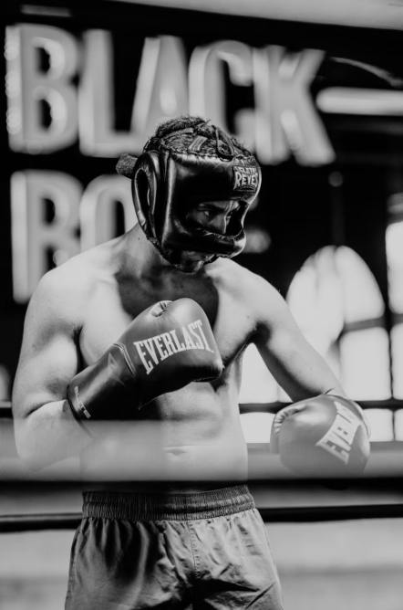
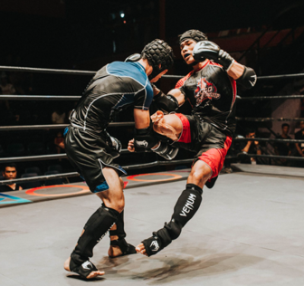
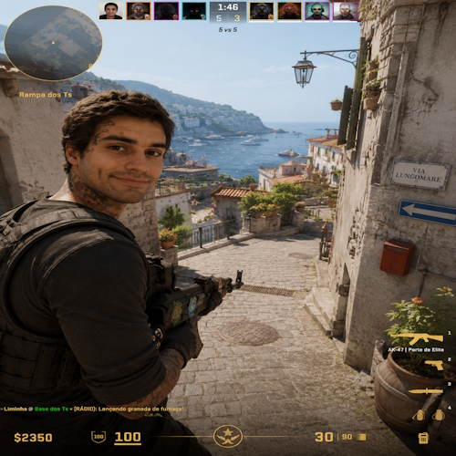
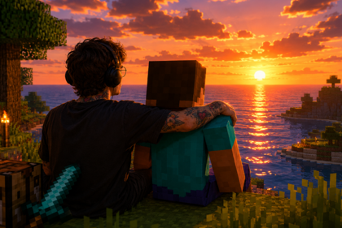

Sobre mim
Me chamo Mateus tenho 25 anos, Resido em São Francisco do Sul, SC. Sou apaixonado por tecnologia e emoções humanas. Gosto de resolver problemas que envolvam analisar, raciocinar e utilizar da criatividade para achar uma resposta. Inclusive estou estudando tecnologia por ter essa característica resolutiva, eu acredito que toda profissão envolva resolução de problemas, mas a tecnologia envolve algo mais prático e direcionado o que corresponde ao meu perfil pessoal e profissional.
Hobbies
Como nem tudo envolve responsabilidades precisamos cultivar hobbies para nos distrair e aliviar toda a tensão do dia a dia, por isso como hobbie eu tenho esporte, envolvendo luta. Acredito que esse esporte melhora muito o nosso humor e auto confiança algo extremamente necessário para o mercado de trabalho. Podemos tirar algo do esporte que envolva as nossas questões pessoais e profissionais e levar isso para á vida e o dia a dia.
Selecionei algumas fotos dos hobbies
Fotos

Boxe

Kick Boxing

Counter Strike 2

Olhando o mar junto com o steve